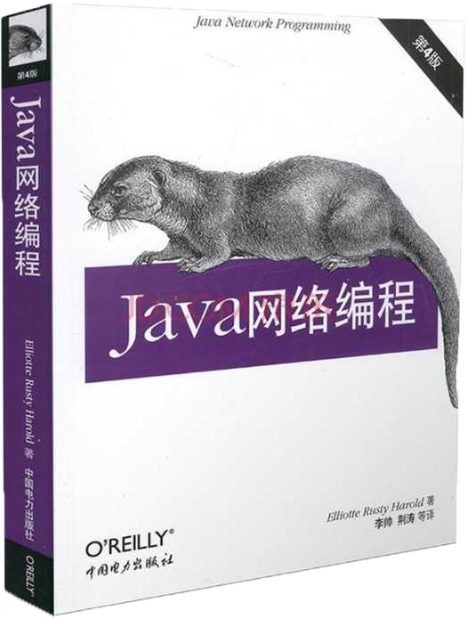
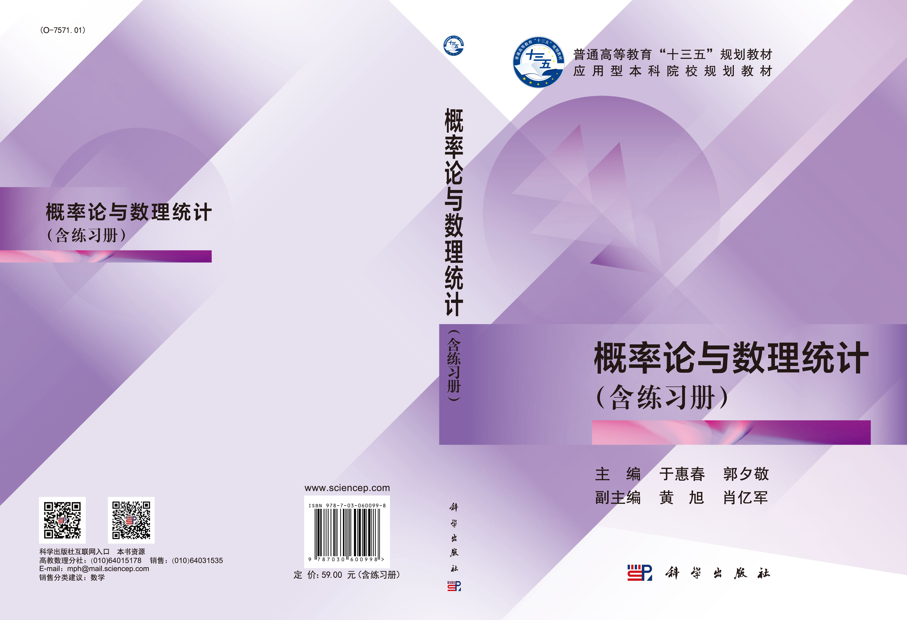

关于我的教育经历
我毕业于：宁波工程学院
这所学校很美，也很漂亮，不信你看：

我的专业是：信息与计算科学
我们的课程很多，以下是我们主修课程：大一：
数据科学导论、基础统计学、C语言课程设计、微积分Ⅰ、微积分Ⅱ、线性代数Ⅰ
大三：
JAVA网络编程、数据分析实验、Web程序设计、操作系统、数据结构与算法、电子商务概论

大二：
概率论与数理统计、面向对象课程设计、数学建模实践、离散数学、面向对象程序设计A、
大数据分析工具、数据分析、数学建模、数据可视化技术、数据库与数据仓库

大四：
待开发
我比较擅长：PYTHON、SAS、MATALAB等数据分析工具
以下是我的一些见解：
PYTHON：
从大一到现在，我学过很多的语言，比如前面提到的C语言、Java语言，但通过学习，我对python语言的接触最多，
也是能代表我的一种语言，相比Java的复杂套式，我更喜欢python的简单明了，而且python对初学者很容易上手，也容易上头。
从而我更想去接触它，了解它，它的发展也很好。
MATALAB：
matlab是一门计算处理数据的编程软件，它能够对很多东西进行处理，比如我们的表格、我们对问题的求解方式它几乎都有，而且几乎完美，
我喜欢上它，是因为它能够让我们对我们的的很多数据进行多样化的处理，我用它做过拟合、画过精美的图，计算过人工难以计算的公式等。
其实我们还学啦sas、spss等很多的编程和数据处理软件
自学课程：PYTHON爬虫过程、HTML的编写
以下是我的一些成果：